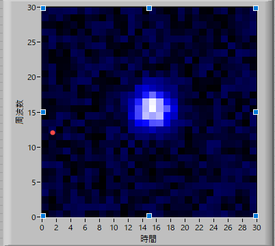
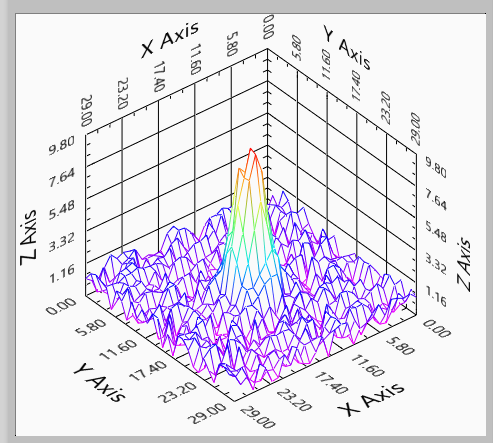

2次元ガウシアン画像のフィッティング方法-01
2次元ガウシアン画像
蛍光顕微鏡で蛍光像の観察を行う際に，
蛍光スポットの位置，広がり方，強度などを解析したい
という局面が頻繁に出てきます．
 
Labviewで再現した蛍光スポット
どのような方法が一番よいのでしょう？
2次元ガウシアンの計算式としては，
\( \Large z= A_0 \times Exp \left( - \frac{x-x_0}{2 \sigma_x^2} \right) Exp \left( - \frac{y-y_0}{2 \sigma_y^2} \right) + Base \)
となります．
考えられる方法としては，
重心位置を求める
という方法ですが，
\( \Large <i>= \displaystyle \sum_{j=1}^{N} \sum_{i=1}^{N} \frac{i \times x_i}{x_i} \)
\( \Large <j>= \displaystyle \sum_{i=1}^{N} \sum_{j=1}^{N} \frac{j \times y_j}{y_j} \)
たしかにこれで重心位置は求まりますが，輝点の大きさ，強度などの見積もりは難しいです．
さらに，背景光（上の式の，"Base"）があると，重心位置は輝度中心からずれていきます．
ほかにもシンプレックス法などの推定方法もありますが，必要なパラメータが6つもあるので，なかなかプログラムを作成するのが大変です．
さて，ここでは，現在，石島研で使われているフィッティング方法と新しく考えてみたフィッティング方法を説明し，その違いと精度に関して検証していきたいと思います．